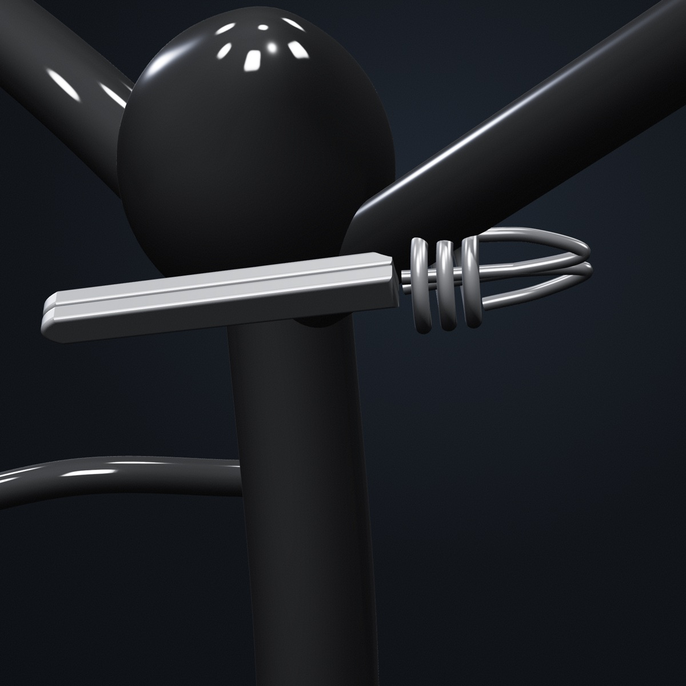
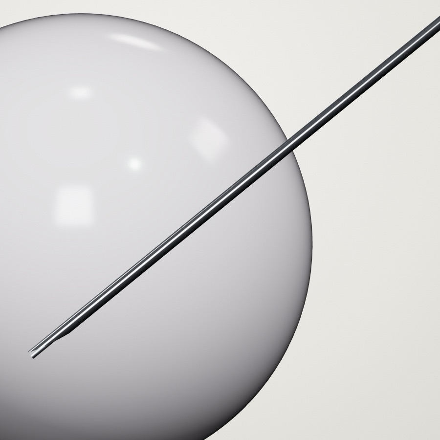
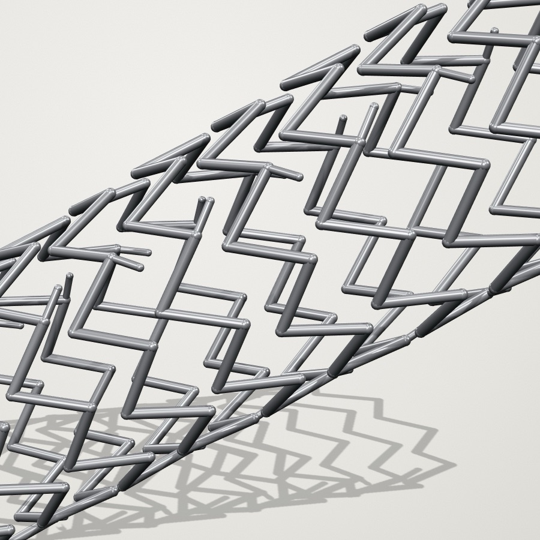
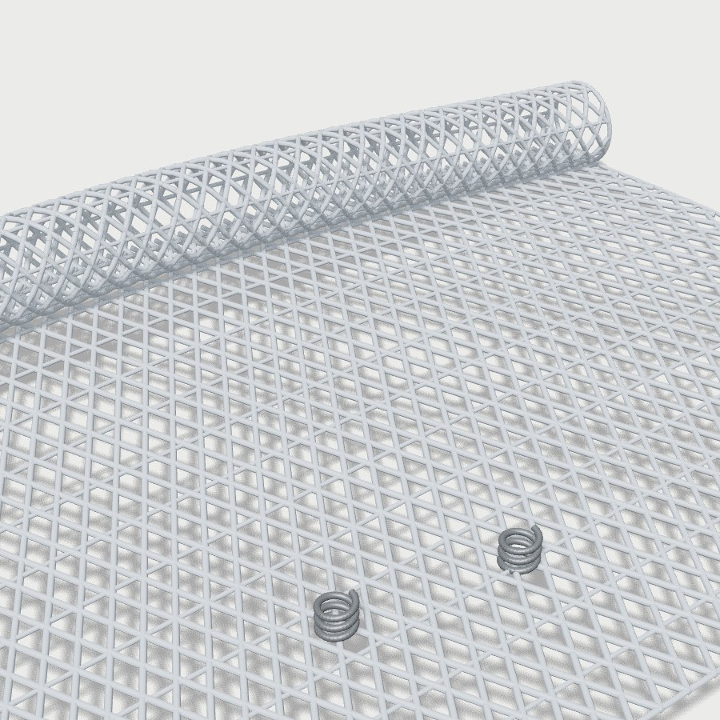

ClipSim
Clipaje microquirúrgico de un aneurisma de la unión carótida interna–comunicante posterior por abordaje pterional transilviano. Seis etapas, diez instrumentos, retracción con presión, succión a dos manos e informe final con tu cinemática.

AmnioSim
Amniocentesis guiada por ultrasonido con ecografía simulada, tenting de membranas, casos aleatorios y retroalimentación de cada error hasta la maestría.

StentSim
Angioplastia y stent ilíaco bajo fluoroscopia simulada: guía, contraste, mapa de ruta, medición y liberación de un stent de nitinol.

HernioSim
Hernioplastia inguinal laparoscópica TAPP, hernia indirecta o directa: colgajo peritoneal, visión crítica de seguridad, reducción del saco, malla con fijación por zonas seguras, cierre, informe final y modo demostración.